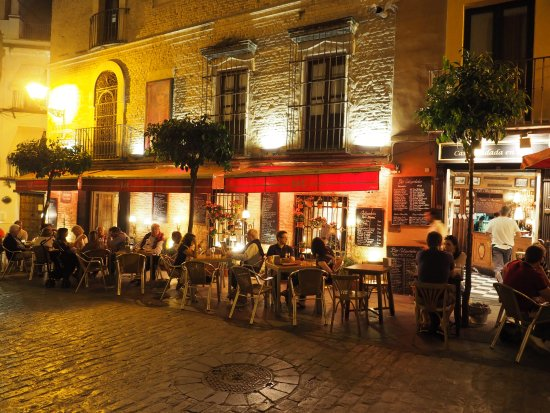

FOODIES IN SEVILLE
Para que su estancia sea más agradable y divertida aqui le dejamos una lista de los mejores bares de Sevilla

ANTIGUEDADES BAR TAPAS
Tapas tradicionales y modernas, así como vinos regionales, en un bar de más de 300 años de antigüedad con terraza.